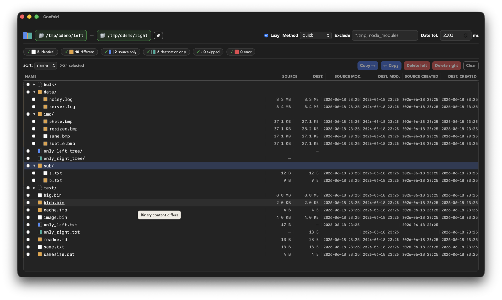
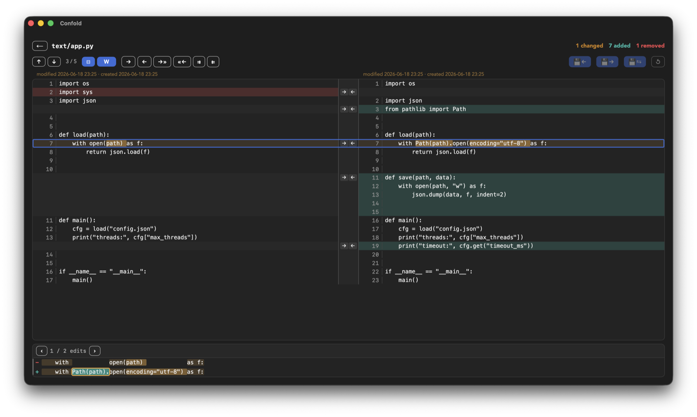
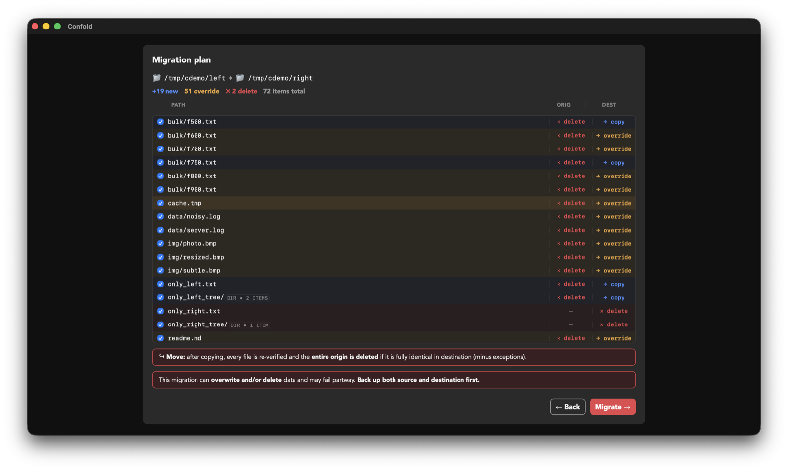
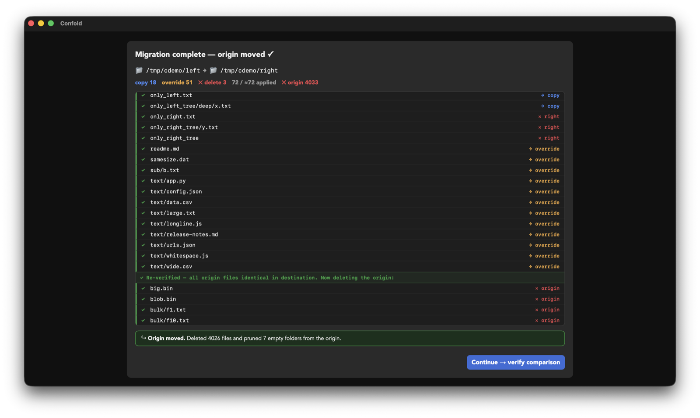
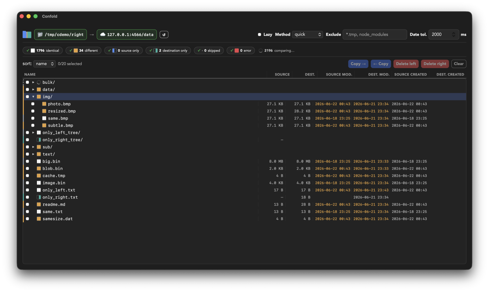

Compare anything. Move what matters.
A fast, keyboard-driven folder & file comparison tool for Linux, macOS and Windows. Diff local and remote trees side by side, then migrate or reconcile them — streaming huge files, never waiting for a full scan.

Three modes, one engine
The same fast compare/reconcile engine, whichever way you need to work.
Compare
Explore differences manually: a lazy, virtualized folder tree with live status counts, word- and character-level side-by-side diffs, and hunk navigation.
Migrate
Reconcile a destination to a source — copy new, overwrite different, delete extra — with a dry-run plan, per-item checkboxes, and a streaming, cancellable apply.
Sync
Bidirectional reconciliation with conflict resolution, on the same engine as Migrate. You stay in charge of every decision.
Built to be fast — and honest
You never wait for a full scan, and you never copy on a guess.
⚡ Never waits
Shows the top level the instant you hit Compare and fills in as you explore. Folders you never open are never compared. Switch compare method with zero re-scan.
🌊 Streams huge files
Multi-GB files compare and copy in 64 KiB windows instead of loading into memory, and a byte compare stops at the first difference.
🔎 A real diff, at any size
Files too big to load show the differences only — changed regions with context, like
git diff. Big binaries open in a hex view. No silent truncation.
🛡️ Move, verified
Migrate can delete the origin after a move — but only after re-verifying every byte landed in the destination, all-or-nothing. A partial move can never strand your files.
Right-click. Compare. Done.
Enable Finder integration and compare two folders in two right-clicks — no app to open, no paths to type.
🖱️ Finder integration (macOS)
Right-click a folder → "Confold Select Origin". Right-click another → "Confold Compare". Menu items adapt as you go. Recent folders are remembered across restarts.
🔗 Deep-link ready
The confold:// URL scheme lets scripts, automations and shell integrations
launch comparisons directly. Stale paths are flagged in red so you fix them before comparing.
Reconcile documents by meaning, with guardrails
Available today through the Confold CLI and public agent skill: combine diverged Markdown or plain-text documents without giving the model unchecked write access.
🧠 Bring the agent you already use
Confold does not call or configure an LLM. A compatible agent runtime supplies the model and proposes the semantic result, so the protocol stays provider-neutral.
🔒 Review before anything is written
Confold fingerprints every input, rejects stale analysis, validates the proposal and shows deterministic diffs. Strict, bounded proposals must account for both variants and cannot contradict a deterministic fast path. Apply creates a new file and never overwrites an input.
The guided desktop workflow and in-app agent/provider settings are on the roadmap. Installing the desktop app alone does not yet expose semantic reconciliation.
See it in action
A fast, keyboard-driven desktop app — local, SFTP and S3 on one engine.





Compare anything to anything
Sources are capability-gated plugins behind one uniform interface — every backend lights up the same engine.
| 📁 Local filesystem | Available |
| 🌐 SFTP · pure-Rust, no OpenSSL/C | Available |
| ☁️ S3 / S3-compatible · AWS, MinIO, R2… | Available |
| SMB · NFS · WebDAV · cloud drives | Roadmap |
Get Confold
Version v0.6.0 — install with your package manager, or download directly.
macOS
macOS 12+ · Apple Silicon & Intel
brew tap confold/confold
brew install --cask confold
Windows
Windows 10 / 11 · x64
winget install Confold.Confold
scoop install confold
choco install confold
Linux
x86_64 · AppImage, .deb & .rpm
brew install confold/confold/confold
The app is ad-hoc signed but not notarized. On macOS, first launch is blocked by Gatekeeper —
open System Settings → Privacy & Security and click Open Anyway.
On Windows, click More info → Run anyway.
winget & Chocolatey may also lag a few days behind a release while they clear moderation.
Prefer to build it yourself? See the
README (there's a headless confold CLI too).
Roadmap
- More sources — SMB, NFS, WebDAV and cloud drives, on the same engine.
- Semantic reconciliation in the desktop app — the CLI + public agent skill are available in source today; next, bring the validated workflow into the GUI and Sync conflicts.
- Signed & notarized builds — code-signing for macOS and Windows to drop the install-time security prompts.
- Confold Cloud — a hosted "reconcile and sync across sources, from one place" service.
Get in touch
Questions, ideas, or want to know when installers land?
Support the project
Confold is free and open source — Apache-2.0. If it saves you time, a small one-time thank-you keeps development moving. No subscription, no account.